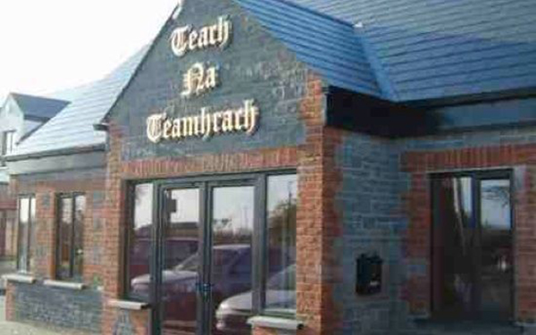
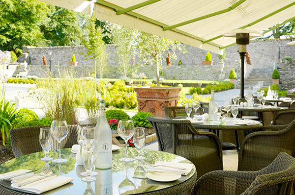
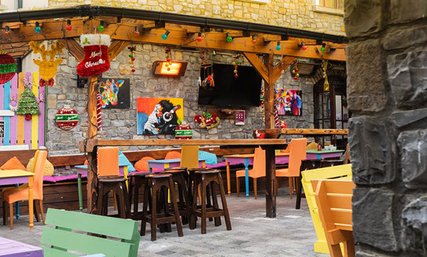
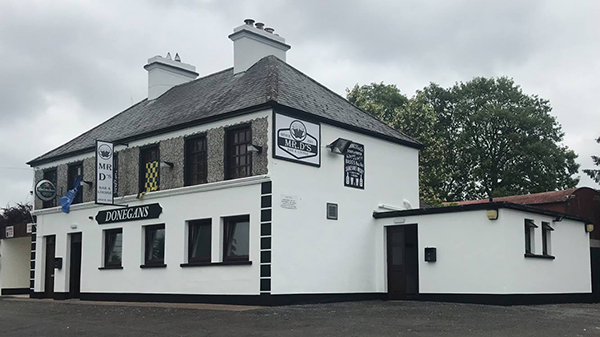
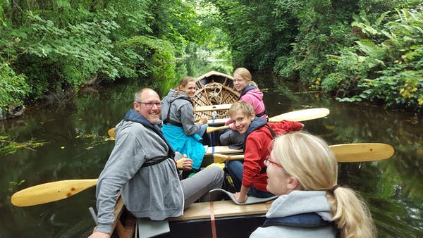
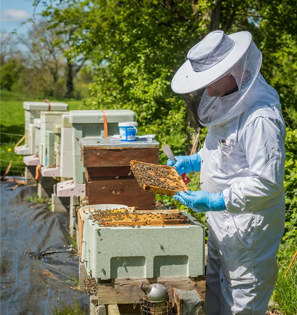
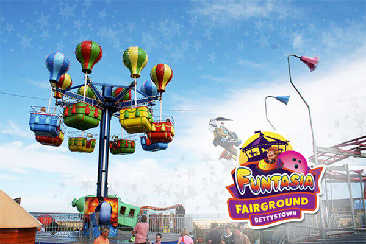
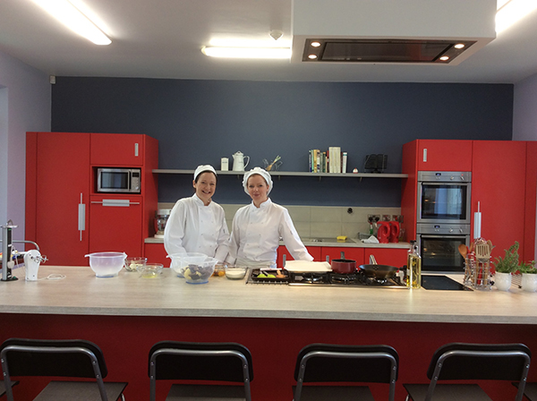
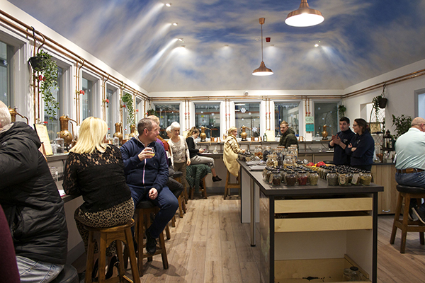

Drogheda is a developing tourist town, and we can see the potential in us.
Altogether, we build a brighter future! We aim to provide a platform for our society to have the opportunity to interact with you.
Therefore, this page was set.
We need you!! As we all know, Drogheda is developing its unique tourism that needs our help and contribution, therefore, we would like to ask for your help.
All the donations will be spent to maintain the historical sites in Drogheda, support the local business and hold events, etc.
Here is the list of where will the donation be spent:
All the donors can track their donation and we will make sure all the money is spent properly.
If you would like to donate for a specific item, you can check the box when you fill in the donation form.
We will highly appreciate your generosity.
|  |
Balreask Bar and Restaurant
This bar restaurant is a family run local business.
It may not be a fancy hotel that has Michelin star ranking, but it must be a restaurant that serves with heart and love.
Once you get into the restaurant, you will soon feel welcoming and fall in love with this family business.
This restaurant is near Hill of Tara with only 10 minutes to drive, it would be a perfect stop-off for you when you feel hungry after visiting Hill of Tara.
Visit Balreask Bar and Restaurant
Tel: (046) 907 8248
Address: Trim Road, Navan, Co.Meath
Photos:
Comments:
|
|  |
Brabazon Restaurant at Tankardstown House
If you are looking for a restaurant offering fine dining and seasonal dishes, this restaurant may be a good one to choose from the local restaurants.
To support the local business and local farm, all the food it offered is locally sourced. This restaurant is one of RAI’s Best Hotel Restaurant in Meath.
It would be a good one to go after visiting the Hill of Slane because it just takes 10 minutes to drive from there.
Visit Brabazon Restaurant at Tankardstown House
Tel: (041) 982 4621
Address: Tankardstown, Co. Meath
Photos:
Comments:
|
|  |
Brogans of Trim
Brogans is a traditional Irish bar that provides home cooked food.
If you want to listen to traditional music while having food, this bar might fit what you want.
Even though this restaurant is a bit far from the tourist spots, it would be a nice and quiet place far from the crowd.
It takes 17 minutes to drive from the Hill of Tara to the restaurant.
Visit Brogans of Trim
Tel: (046) 943 1237
Address: High Street, Trim, Co. Meath
Photos:
Comments:
|
|  |
Donegan's Pub
This pub has been a traditional Irish whiskey pub since 1871.
Donegan's stock a wide and varied selection of drinks, and customers can choose their perfect fit from over 100 Irish whiskeys.
It takes about 7 minutes from the Hill of Slane to the pub.
Visit Donegan's Pub
Tel: (041) 982 6834
Address: Ardee, Street, Collon, Co. Louth
Photos:
Comments:
|
|  |
Boyne Boats
This outdoor business will offer you the historic Boyne Canal experience with boats.
The professional guide will teach you how to roll the boat while telling you all the history and stories in this area.
Even though the mixing boat tour is cancelled because of COVID-19, the private boat service is still ongoing.
Visit Boyne Boats
Tel: (086) 361 6420
Address: Tiernan’s Sealock, Oldbridge, Co.Meath
Photos:
Comments:
|
|  |
Beewise Gardens
Beewise Gardens provide a natural environment for visitors to enjoy the natural life and learn about ecological equilibrium.
This company often holds some workshops for free to allow people to take an educational self-guided walk around their places.
Schools, families and communities can apply for tours and workshops.
This company really educates people a lot and contributes to the local community a lot in many aspects.
Visit Beewise Gardens
Tel: (086) 344 6791
Address: Bee Wise Nature Trail, Crerogue, Kilmessan, Co.Meath
Photos:
Comments:
|
|  |
Funtasia Bettystown & Drogheda
Funtasia is a 35,000 sq. ft water park with many facilities.
There are multi-level play areas in the park that can fit all ranges of people.
In Funtasia, you can play bowling, have fun in the jungle zone, explore the 3D motion theatre, get on boats, play video games and gamble.
All these facilities and services can fit families’ needs in just one place.
Therefore, it would be a nice place to visit and play! It only takes 8 minutes to drive from the town centre of Drogheda to this park.
Visit Funtasia Bettystown & Drogheda
Tel: (041) 982 8301
Address: Funtasia Theme Parks & Casinos, Unit 1, Donore Road Industrial Estate, Lagavooren, Drogheda, Co. Louth, A92 EVH6
Photos:
Comments:
|
|  |
Lismullin School of Culinary & Home Arts
Lismullin School of Culinary & Home Arts located close to the Hill of Tara.
It offers culinary classes for all ages and all groups of people.
All the classes are tailor-made for groups, it would be the best idea to learn how to cook Irish cuisine.
Visit Lismullin School of Culinary & Home Arts
Tel: (046) 902 5099 / (086) 894 4491
Address: Lismullin Hospitality Services Centre, Navan, Co. Meath
Photos:
Comments:
|
|  |
Listoke Distillery & Gin School
Listoke Distillery & Gin School is the first gin school in Ireland, and it is an important role in local business and revitalization.
This school is never left behind the trend.
When COVID-19 spread all over the state causing a lack of hand sanitizers, this school started producing their alcoholic sanitizers to help its business and society.
Therefore, why not visit this gin school when things become normal?
Visit Listoke Distillery & Gin School
Tel: (083) 854 4882
Address: Tenure, Monasterboice, Co. Louth
Photos:
Comments:
|